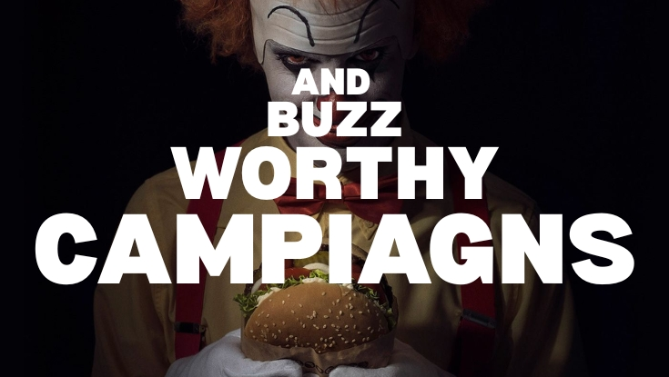

Some campaigns sell products. A rarer class reshapes how marketers think—about media efficiency, cultural timing, rivalry, and how consumer behavior itself can become distribution. Burger King’s “Scary Clown Night” (2017) belongs firmly in the second category.
On the surface, it was a cheeky Halloween offer: come dressed as a clown, get a free Whopper. In practice, it was an integrated activation engineered for low paid input and high earned output—a planner’s dream if you care about ROMI, reach multiplication, and customer-journey handoffs.
Campaign visuals (with sources)



External campaign galleries (good for finding campaign stills to upload into your repo later):
- Campaign portfolio page (multiple assets)
- Campaign coverage (context + frames)
- AdForum campaign page
1) Strategic context: why it worked before it launched
Great campaigns begin with context. In 2017, clowns had re-entered popular culture with unusual intensity (helped by the cultural heat around It and the broader “creepy clown” phenomenon). Meanwhile, Burger King’s most iconic competitor had one of the world’s most recognizable mascots: a clown.
That produced a rare alignment: Halloween + clown fear + competitor symbolism. The campaign wasn’t built around product features. It was built around a cultural insight and a rivalry-coded symbol— which is precisely how high-impact planning is supposed to work.
2) The big media idea: turning participation into inventory
The creative idea (“come as a clown, eat like a king”) was entertaining. The media idea was more powerful: convert a costume behavior into a global traffic event.
Every participant arriving dressed as a clown becomes:
- physical proof of activation (it’s real, not just an ad)
- organic social content (people document it instinctively)
- a PR trigger (journalists cover what crowds are doing)
- a word-of-mouth engine
- live brand theatre (the store becomes a stage)
In IMC terms: the audience is not merely reached—the audience becomes the medium.
3) IMC architecture: POEM done properly
Paid media (minimal, precision-led): Paid’s role is ignition, not brute-force scale—seed the idea, then let participation do the multiplying.
Owned media: Brand social, in-store signage, and local pages stabilize the message and provide “official” reference points.
Earned media: The mechanic is designed to be newsworthy and shareable—earned becomes the true scale engine.
4) Consumer Journey Design (CDJ)
- Awareness: horror styling + seasonal timing + immediate talk value
- Consideration: low-friction incentive (free Whopper)
- Action: measurable store visit (online buzz → offline footfall)
- Advocacy: costume participation generates UGC and WOM
5) Why this is a planner’s dream: media efficiency
The core productivity equation is simple: low paid spend + massive earned amplification = exceptional efficiency. When you build a system where behavior produces content, you are no longer only buying impressions—you are designing them.
6) Competitive strategy: ambush by symbolism
Burger King didn’t need to explicitly name a competitor. The clown symbol did the work. This is advanced competitive semiotics: it leverages memory structures, cultural recency, and instant decoding.
What marketers should learn
- Timing beats budget: cultural timing can outperform heavy media spend.
- Earned is designed: virality is often engineered through participation mechanics.
- Behavior can become media: the costume mechanic converts action into reach.
- Rivalry is an asset: symbolism multiplies memorability when used responsibly.
- Brand + activation synergy: fame and footfall together is rare excellence.
Final thought
“Scary Clown Night” is not merely a Halloween campaign. It’s a masterclass in cultural insight, IMC orchestration, customer-journey design, and earned media economics.
The best campaigns do not buy attention. They design situations that generate it.
Media Planning Cheat Sheet (quick study box)
- POEM: Paid (buy), Owned (control), Earned (persuade others to spread).
- ESOV: Excess Share of Voice = SOV − SOM. Positive ESOV often supports growth over time.
- ROMI: (Incremental Profit − Marketing Cost) / Marketing Cost.
- CDJ: Awareness → Consideration → Action → Advocacy.
- CPM: Cost / (Impressions ÷ 1,000). Earned can drive “near-organic” economics at the margin.